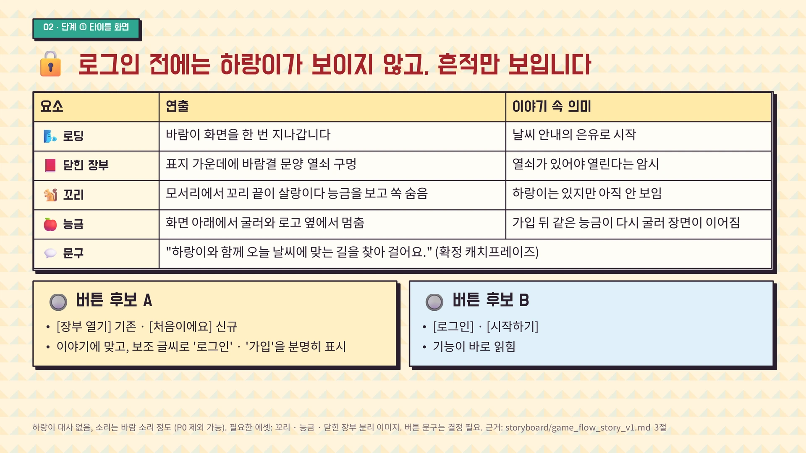
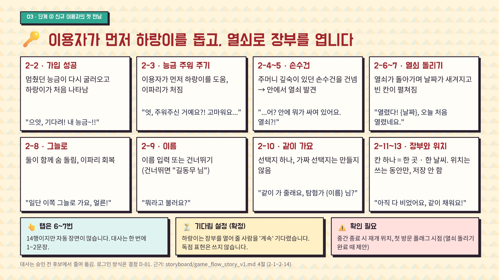
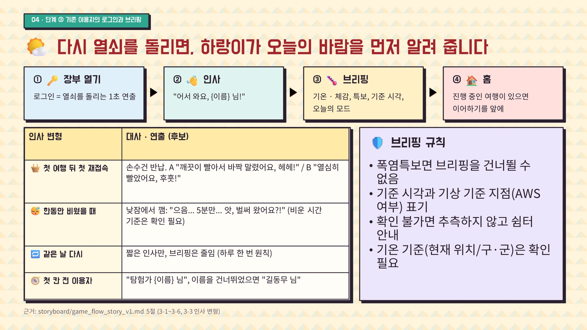
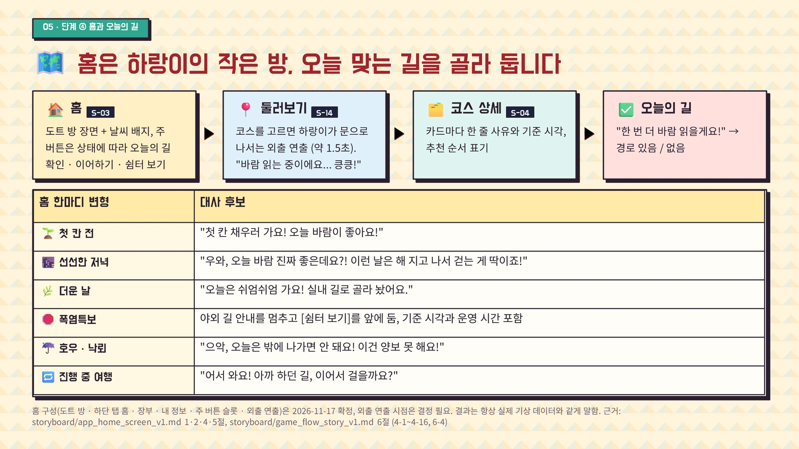

TREAGENT · AX 크리에이티브 트랙 · 발표 2026.11.18
대프리카 히든 퀘스트
🐿️ 지난 발표 이후 정한 것, 만든 것, 그리고 피치 7장 답변
🗓️ 지난 발표(11/13)는 문제와 컨셉이었습니다.
🛠️ 오늘은 결정 6건, 구현 화면, 목업, 증명 7가지를 이어서 보입니다.
이번 범위: 여름 '대프리카' 길(코스) 제작과 파일럿 · 발표 전 확인 중인 항목은 [확인 필요]로 표시
01 · 지난 발표 이후
🧭 11/17 팀 회의에서 여섯 가지를 정했습니다
| 결정 | 바뀐 점 | 근거 |
|---|---|---|
| 🍎 도장 = 미션 완료 | 장소마다 미션을 마치면 능금 도장 1개, 한 코스 도장은 3개 | 기술 명세 1-3절 #1 |
| 📍 인증 = GPS + 미션 | GPS로 도착을 확인한 뒤 미션을 마쳐야 방문 인증이 끝남. GPS만으로는 도장 없음 | 기술 명세 1-3절 #2 |
| 🔁 새 여행 시작 | 진행 중인 여행이 있어도 경고창 확인 후 새로 시작 | 기술 명세 1-3절 #3 |
| 🚶 코스는 장소 3곳 | 기존 코스 A 4곳을 3곳으로 줄이고, 시드 코스 C01(중구 근대골목 걷기)로 통일 | 기술 명세 1-3절 #4 |
| 📒 앨범·주머니·오늘 페이지 | 장부 책갈피에 앨범 추가, 주머니는 홈에서 따로 열고, 홈 방의 장부 그림이 오늘 페이지 | 기술 명세 1-3절 #5 |
| 🗺️ MVP는 중구만 | 구·군은 중구로 고정. 중구 밖이면 "지금은 중구만 안내해요" | 기술 명세 1-3절 #6 |
출처: plan/spec/treagent_tech_spec_v1.md 1-3절 (2026-11-17 팀 논의 결정 6건). 인증 반경·정확도 수치는 현장 시험 후 정함 [확인 필요]







03 · 구현된 기능
🛠️ 앱 화면 여섯 개와 서버 판정 흐름이 코드로 있습니다
📱 앱 (dev/app)
- 로그인 · 가입 화면과 인증 상태 (login, signup)
- 위치 확인 화면: 현재 위치 읽기, 거부·실패 안내
- 구·군 선택 화면: MVP는 중구만
- 코스 목록과 코스 상세 (코스 3곳 기준 데이터)
🖥️ 서버 (dev/server)
- 날씨 API 연결 (기상청 어댑터, 격자·캐시)
- 규칙 함수 decideMode: 기온·특보에 따라 모드 결정
- 장소 적합도 표를 읽어 모드별 장소 선택
- POST /recommend: 날씨·모드·장소를 묶어 응답
- 테스트 120개 통과 (2026-11-18 로컬 실행)
🔒 좌표는 저장하지 않고, 앱은 DB와 외부 API에 직접 붙지 않고 서버만 호출합니다.
출처: dev/app/src/app/ (index, login, signup, district, courses, course/[id]), dev/server/src/ (weather, rules/decide_mode.js, places/select_places.js, routes/recommend.js), dev/README.md. 기상청 실제 연동 응답은 이 발표에서 확인하지 않음 [미검증]
04 · 페이지 목업 ①
🌳 시작 화면: 타이틀, 로그인, 지역 선택
이 목업이 보여 주는 것
- 타이틀 → 로그인 · 가입 → 위치 확인
- 위치를 못 읽으면 구·군을 골라 시작
- MVP는 중구만 안내
🔗 storyboard/app_login_region_mockup_v1.html
도트 스타일 목업 v1. 로그인 방식(D-01: 이메일·비밀번호 또는 소셜 1종)은 결정 전이라 두 안의 입력 칸을 모두 표시. 출처: storyboard/app_login_region_mockup_v1.html
04 · 페이지 목업 ②
🏠 홈(S-03): 도트 방과 오늘의 길
홈에서 하는 일
- 날씨 배지와 주 버튼 (오늘의 길 확인 · 이어하기 · 쉼터 보기)
- 하랑이가 문으로 나서는 외출 연출
- 하단 탭: 홈 · 장부 · 내 정보
🔗 storyboard/app_home_mockup_v1.html
홈 구성은 2026-11-17 확정, 외출 연출 시점은 결정 필요. 출처: storyboard/app_home_mockup_v1.html, storyboard/app_home_screen_v1.md
04 · 화면 흐름과 진행 상태
🔀 시작부터 완주까지, 지금 되는 곳과 설계만 된 곳
✅ 구현됨 (앱 화면)
- 시작 · 로그인 · 가입
- 위치 확인 · 구·군 선택
- 코스 목록 · 코스 상세
🖼️ 목업만 있음
- 홈 (S-03)
- 타이틀 · 첫 만남 연출
- 외출 연출 (하랑이 이동)
📝 설계만 됨 (화면 미구현)
- 여행 지도 · 경로 변경 (S-05 · S-07)
- 방문 확인 GPS + 미션 (S-06 · S-15~S-18)
- 완주 · 한 장 · 장부 · 주머니 · 앨범 (S-08~S-09, S-19~S-20)
👉 다음 개발 순서는 여행 지도 → 방문 인증 → 완주 한 장입니다. 순서는 팀 확인이 필요합니다.
출처: storyboard/app_screen_storyboard_v1.md (S-01~S-21), dev/app/src/app/ 파일 목록 (2026-11-18 확인). 화면 번호는 기술 명세 5장 기준
05 · 피치 ① 문제 ✅ 충족
🔥 여름의 대구는 나갈 이유도, 쉴 곳 정보도 약합니다
🌡️ 더위 (1991~2020 평년)
- 대구 여름 평균기온 25.5℃
- 전국 여름 평균기온 23.7℃
🏠 쉼터 운영 시간
- 무더위쉼터 1,196곳 중 18시 이후 운영 235곳 (19.6%)
- 24시간 운영 5곳 (2026.8 기준)
📊 후기 52건
- 대기·혼잡 13건, 휴관·운영 변경 10건
- 요약문 기준이라 전체 불편률이 아님
🧭 고객 여정 52건
- 알아보기 9 · 이동 2 · 둘러보기 27 · 결제 4 · 먹기 10
- 재방문 단계는 표본 0건
출처: 대구 기후변화 분석보고서 (기상청, 2025.9) 26쪽 · 2023년 여름철 기후분석 보도자료 (기상청, 2023.9.7) 붙임 4 · research/painpoint/voc_classified.csv · research/painpoint/journey_map.md · plan/daeprica_hidden_quest_plan.md 9장 (쉼터 수치는 매일신문 인용, 재확인 전)
05 · 피치 ② 해결 ✅ 충족
🌳 날씨와 시간대를 읽어 오늘의 길을 고르고, 바뀌면 대체 길을 냅니다
① 입력
기온·체감, 시간대, 요일, 위치
② 규칙 판정
모드 결정 (서버 규칙 함수)
③ 길 선택
검수된 장소 DB에서 고름
④ 안내
하랑이가 문장으로 안내
🛡️ 안전 원칙
- 안전 규칙은 AI가 바꾸지 않음
- AI는 문장만, 장소와 쉼터는 검수 DB에서만
- 폭염특보면 야외 안내를 멈추고 쉼터 안내
🔎 우선 기회 O1
- 운영·날씨를 확인한 뒤 다음 거점을 안내
- 우선 선택은 팀 결정 [결정 필요]
- 기준 수치 28℃·33℃는 확정 전 [확인 필요]
출처: research/valuechain/analysis.md 18·30·34행, plan/daeprica_hidden_quest_plan.md 6-1·8장, dev/server/test (규칙 테스트 120개 통과, 2026-11-18 로컬 실행)
05 · 피치 ③ 시장 ❌ 미충족
🗺️ 경쟁 도구는 있지만, 시장 규모 숫자는 아직 없습니다
| 도구 | 제공 범위 | 가격 (회사 공개 시작가, VAT 별도) |
|---|---|---|
| 🔲 큐알스탬프 | QR·NFC·GPS 인증, 리워드 게임 | 정액 플랜 100만 원~ |
| 🎪 이벤터스 | 행사 플랫폼 안의 QR 스탬프 | 베이직 무료 |
| 🗺️ 퀘스투어 | 셀프+맞춤 미션, QR/GPS, 상권 리포트 | 30만·200만·600만 원~ |
✅ 확인된 것
- 날씨에 따라 길을 바꾸는 사례는 찾지 못함 (검색 범위 안)
⚠️ 아직 없는 것
- TAM · SAM 숫자 (출처 파일 없음)
- 시장 규모는 조사 필요 [근거 필요]
출처: research/valuechain/competitors/comparison.md (2026-11-12 확인), research/valuechain/operators/comparison.md. 이 발표에서 시장 규모를 말하지 않고, 조사 후 채움
05 · 피치 ④ 사업 모델 ⚠️ 부분 충족
💼 소비자에게는 팀권을, 지자체와 대행사에는 코스 제작을 제안합니다
🙋 민간 직접
팀권 첫 가격 실험값 14,900원 (가설)
🏛️ 지자체·재단
한 코스 단위로 기획·제작·운영 견적
🎪 행사 대행사
공공 행사 수탁사에 코스·미션 제작과 현장 운영 지원
| 가정 (숫자는 모두 가정) | 값 |
|---|---|
| 100건 판매 시 | 149만 원 (수수료·세금 반영 전) |
| 300건 판매 시 | 447만 원 (수수료·세금 반영 전) |
⚠️ 단위 원가와 손익분기 주문 수는 아직 없습니다. 파일럿에서 판매량과 마진을 확인합니다.
출처: plan/treagent_customer_strategy_v1.md 6장 (판매 경로·가설·가정 숫자). 제작비 참고: 퀘스투어 개발 라이트 1,500만 원부터 (2022 기준 참고치). 공공 수요 사례: 국채보상운동기념공원 독립추리게임 (뉴시스 2024.3.24, 낙찰가 미확인)
05 · 피치 ⑤ MVP ⚠️ 부분 충족
📱 화면과 서버 코드는 있고, 사용자 테스트는 아직 없습니다
✅ 확인된 것
- 서버 테스트 120개 통과 (2026-11-18 로컬)
- 앱 화면 파일 6개 (시작·로그인·가입·구·군·코스 목록·코스 상세)
- 인증 방식은 GPS + 미션으로 결정
❌ 아직 없는 것
- 사용자 테스트 결과 (docs/test/results.md 없음)
- 가설 판정 (지지·기각·보류)
- 라이브 주소 미정
🧪 테스트 계획 (창작 후보 과업 2개, 팀 확정 전)
- 사용자 3~5명에게 과업 하나를 시키고 완료·막힘을 기록 (진행자는 돕지 않음)
- 과업 후보 A: 날씨 값 입력 → 오늘의 길 확인 · 후보 B: 길 확인 → 방문 인증 → 능금 도장
출처: dev/app/src/app/, dev/server/test/, plan/spec/treagent_tech_spec_v1.md 1-3절, research 피치 개요 5장 (Day17 p.8~10 방식). 실패 대비로 스크린숏 3장을 함께 준비
05 · 피치 ⑥ 팀 ✅ 충족
👥 세 명이 역할 7개를 나눠 맡았습니다
| 이름 | 맡은 역할 |
|---|---|
| 소정 | FE · BE · AI 일부 |
| 소형 | CON · DES · PM · AI 일부 · FE 일부 |
| 민지 | RES · DES · PM · FE 일부 |
📦 작업 흔적
- origin/main 기준 2026-11-03~11-18 커밋 143건, PR 번호 있는 커밋 84건 [기준 통일 필요]
⚠️ 확인할 것
- DES · PM을 두 명이 맡음 → 주 담당 지정 [결정 필요]
- 팀명 표기 [확인 필요]
출처: plan/team_roles_v1.md 1·2·3장 (2026-11-13 합의), plan/spec/treagent_tech_spec_v1.md 2장, git log origin/main (2026-11-18 확인)
05 · 피치 ⑦ 요청 ✅ 충족
🤝 무엇을 해 주면 되는지 한 문장으로 요청합니다
📌 요청 대상 (임시)
- 후보 A: 중구 관광·문화 담당 부서 (임시 선택, 팀 확정 전)
- 후보 B: 행사 대행사 또는 현장 운영 주체
🗓️ 계획 칸
- 코스 C01 중구 근대골목 걷기 (3곳, 시드 확인 완료)
- 대체 길 안내 설계, 인증 방식 결정, 하랑이 표정·움직임 구현 가능 여부 확인
✉️ 요청 문장 후보 (창작, 택 1): "중구 근대골목 코스의 운영 정보를 함께 확인해 줄 담당 부서가 필요합니다." / "중구 근대골목 파일럿을 함께 열어 줄 관광·문화 담당 한 곳을 찾고 있습니다."
출처: presentation/20261118/pitch_outline_v1.md 7장, plan/feedback/20261113_presentation_feedback_v1.md 1~7장, plan/treagent_customer_strategy_v1.md 202·210행
06 · 다음 단계
📋 발표 전에 정할 것과 그다음 할 일
⚠️ 결정 필요
- 피치 장별 창작 후보 A/B 확정 (1~7장)
- 요청 문장 후보 택 1, 요청 대상 확정
- 로그인 방식 D-01, 날씨 기준 28℃·33℃ (D-06)
- 인증 반경·정확도 (현장 시험 후)
- DES · PM 주 담당, 팀명
🧪 그다음 할 일
- 사용자 테스트 3~5명, 결과 저장과 가설 판정
- 단위 원가 가정값 입력 (손익분기 계산)
- TAM · SAM 근거 조사
- 여행 지도 → 방문 인증 → 완주 한 장 구현
🍎 하랑이와 함께 오늘 날씨에 맞는 길을 걷고, 능금 도장으로 대프리카의 여름을 기록합니다.
근거: presentation/20261118/pitch_outline_v1.md 결정 필요·다음 단계 절, plan/spec/treagent_tech_spec_v1.md 1-3절. 이 장은 팀 내부 확인용이며, 발표 전 정리 후 빼거나 남깁니다
← → 키로 이동